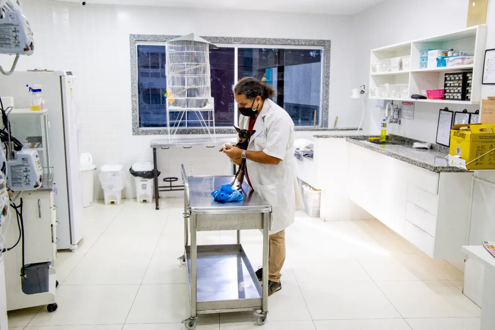
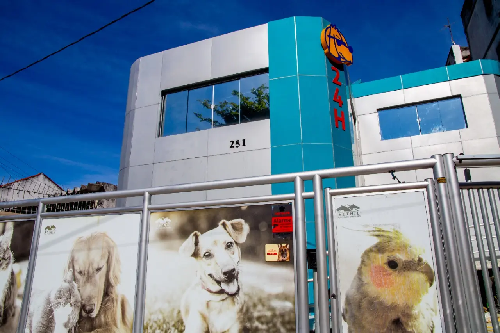
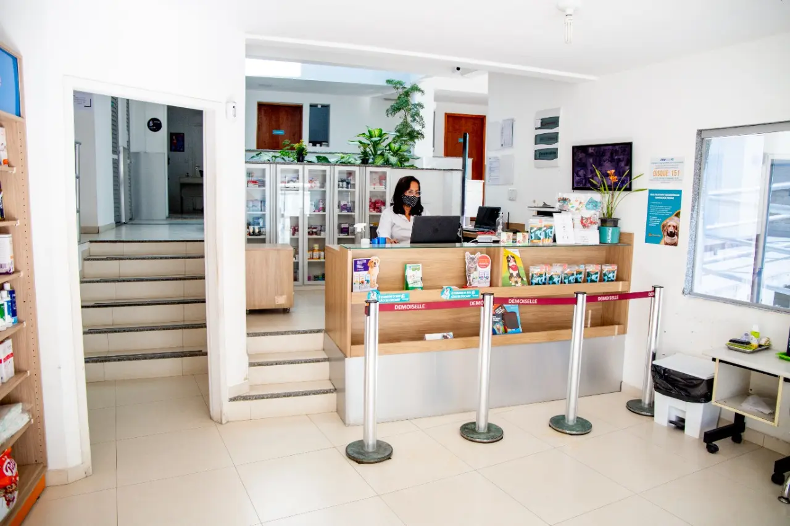

Emergência e internação
Suporte contínuo, conforto e recursos de UTI para pacientes que precisam de observação.
Hospital veterinário aberto 24 horas
Atendimento completo para cães e gatos, com emergência, internação, cirurgia e exames na Ilha do Governador.
4,4 no Google 331 avaliações no Google
Hospital Vida de Cão
Há mais de 30 anos, a Vida de Cão cuida da saúde dos pets na Ilha do Governador. O hospital reúne equipe capacitada, atendimento 24 horas e recursos para acompanhar casos simples e complexos.
Conheça nossa estrutura
Cuidado em um só lugar
Todos os serviços funcionam 24 horas, com exceção do pet táxi.
Suporte contínuo, conforto e recursos de UTI para pacientes que precisam de observação.
Acompanhamento clínico e atendimento especializado para cães e gatos.
Centro cirúrgico equipado e anestesia inalatória para maior controle durante o procedimento.
Raio-X digital, laboratório de patologia e apoio ao diagnóstico no próprio hospital.
Cuidados preventivos para proteger a saúde e acompanhar cada fase da vida do pet.
Transporte para facilitar a ida e a volta do seu pet. Consulte horários e disponibilidade.

Estrutura real do hospitalPreparado para cuidar
Da recepção ao centro cirúrgico, cada ambiente foi pensado para oferecer segurança, agilidade e conforto aos pacientes e suas famílias.
Fácil de encontrar
Dúvidas frequentes
Se ainda precisar de ajuda, a equipe está disponível pelo telefone ou WhatsApp.
Sim. O atendimento veterinário funciona 24 horas, todos os dias.
O hospital oferece consultas, internação, cirurgia, exames, vacinas e especialidades veterinárias.
Sim. A estrutura conta com raio-X digital e laboratório de patologia 24 horas.
Fale diretamente com a equipe pelo WhatsApp ou telefone antes de se deslocar.
Seu pet precisa de atendimento?